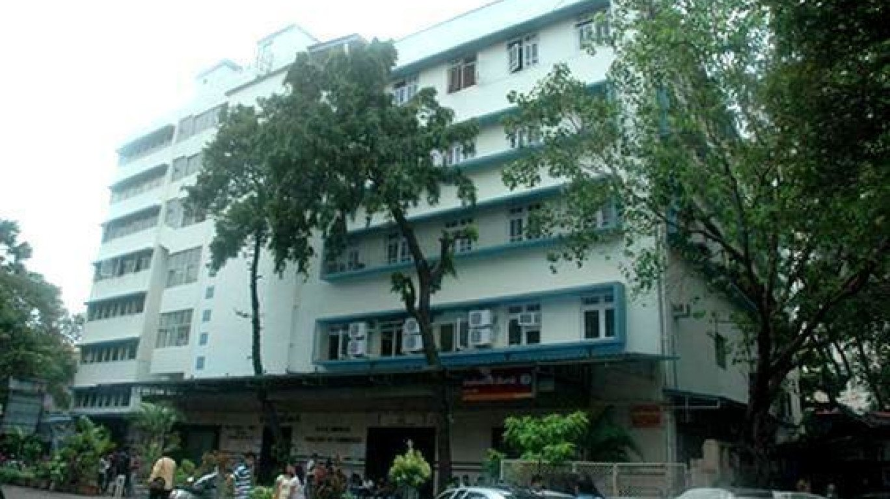

Colleges for BCA in Mumbai
KPB Hinduja College Of Commerce
K.P.B. Hinduja College of Commerce, founded in 1974 is one of the leading private/unaided colleges in the nation under the affiliation of Mumbai University. The Hinduja College of Commerce has been recently ranked at 77th by the prestigious rankings of India Today 2021 for Commerce and has received various awards and titles since its establishment. The college is awarded the “Coveted status” and UGC selected it as “College with Potential for Excellence”.
S K Somaiya College

SK Somaiya College offers undergraduate, postgraduate & doctoral programs in the field of Arts, Science & Commerce. Admissions are purely based on merit and are subject to the availability of seats as per the directions issued by the University of Mumbai.
SK Somaiya college also provides placement and internship opportunities to its students. The highest salary package offered to a SKSASC student is INR 4.2 LPA, while the average CTC stood at INR 2.15 LPA. Some of the top recruiters are Wipro, Media.net, Bajaj Allianz, CRISIL, ICICI Securities, Capgemini, Justdial, Angel Broking, and many moreNational Institute Of Management
We offer you quality courses to enhance your career, designed to provide you with specialist knowledge of international business, so that you get a truly international perspective, rather than one, that is solely relevant for one country. The wide range of electives allows you to build a program to meet your career objectives. The flexibility of these distance learning courses allows you to fit your studies around your personal and professional commitments.
Smt. P.N. Doshi Women's College
It provides education to nearly 5000 girls through Junior colleges (Affiliated to HSC Board), Degree colleges offering conventional and professional courses as well as Post graduate programs, Diploma Institutes (Affiliated to S.N.D.T. Women’s University), Add-on courses and a Career Institute, all under one roof. The trust also manages two schools, which are from pre-primary section to secondary section (Std. X). The college has a total faculty of around 50 members and all of them are highly experienced. SPN Doshi Placement Cell has tie ups with numerous companies that recruit students from various courses. Some of the top recruiters of this institute are Cognizant, Infosys, TCS, Wipro etc.
upGrad (Online College)
The top MBA courses with collaboration with institutes such as Liverpool Business School, Deakin University, Chandigarh University, University of Essex Online and Birla Institute of Management Technology provide mentorship and placement assistance to the students along with National and Aborard accreditation of the certificates.
It has partnerships with global universities such as IIT madras, Deakin Business School, and MICA.It is catered to more than 34500 active learners with 6,028 full-time learners. It has more than 300 hiring partners. The highest salary package offered is 73 LPA and average hike in the salary of the graduates is 58%. The highest Salary Hike of upGrad Graduates is 400%. Some of the top recruiting companies are Amazon, Myntra, JP Morgan, Accenture, TCS, Infosys, and many more.